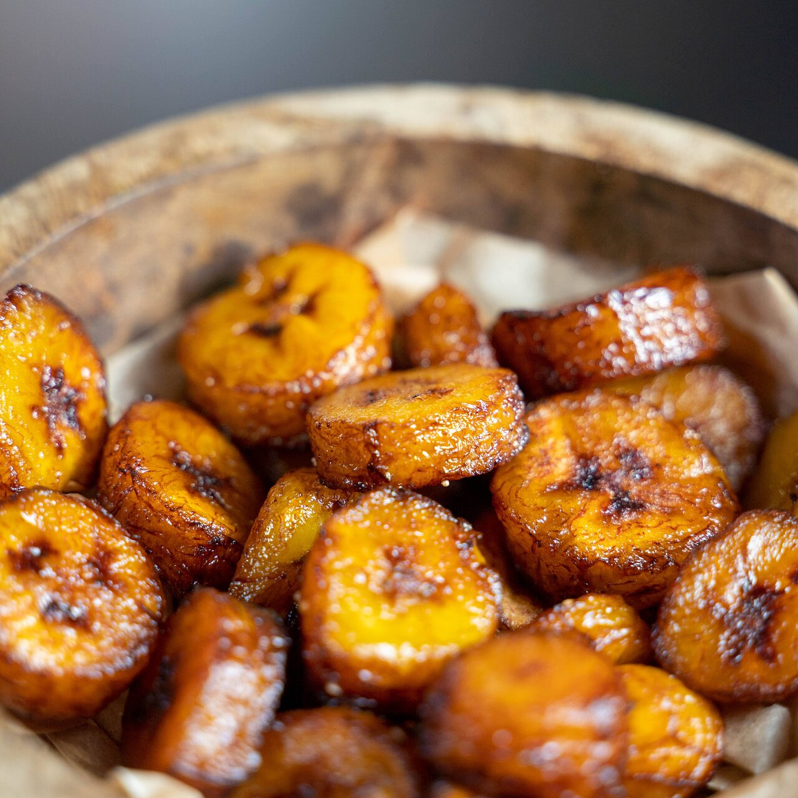

Beschrijving
Als we het hebben over gefrituurde bakbanaan of plantain, is het belangrijk om te weten wat het verschil is tussen de bakbanaan en de banaan. Beide komen uit dezelfde familie, maar er zit wel degelijk verschil in.
Ingredienten
- 2 bakbananen, rijp en in schuine plakken
- Neutrale olie om in te bakken
- Zout (optioneel)
Instructies
- Snijd de bakbanaan open en verwijder de schil. Neem vervolgens een groot mes en snijd de plantain in dikke schuine plakken.
- Verwarm ondertussen de olie tot 190 graden in een (frituur)pan en zet een bord met keukenpapier klaar, zodat de plantain daarop kan uitlekken.
- Voeg in delen de vrucht toe aan de olie en bak ongeveer 1 minuut per zijde. Voeg niet te veel toe aan de olie, zodat de plakjes niet aan elkaar blijven plakken.
- Laat de bakbanaan uitlekken op keukenpapier en bestrooi eventueel met zout voor extra smaak.